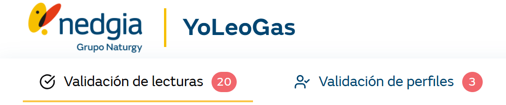

El menú de la aplicación contiene las funcionalidades en base al perfil de trabajo. Las opciones siguientes tendrán un indicador del volumen de peticiones pendientes:
Validación de Lecturas
Validación de Perfiles
El resto de entradas no dispondrá del volumen total de lecturas o perfiles puesto que se puede consultar la estadística en los informes correspondientes.
